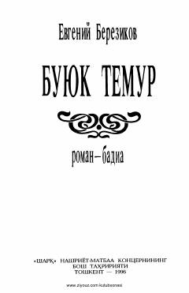

BTAmir Temur hayoti va faoliyatiga bag'ishlangan tarixiy-badiiy roman.
Ushbu tarixiy roman-badiada buyuk sarkarda va davlat arbobi Amir Temurning hayoti hamda faoliyati haqqoniy tasvirlangan. Asarda XIV-XV asrlar ijtimoiy-siyosiy muhiti, xalq urf-odatlari va harbiy yurishlar badiiy mahorat bilan yoritib berilgan.